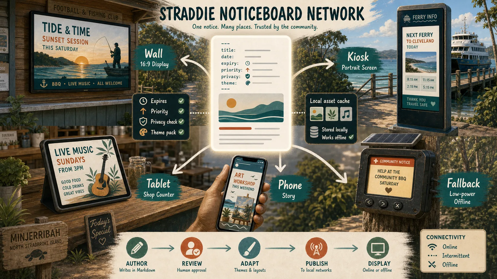

Minjerribah · North Stradbroke Island
A noticeboard
for Straddie.
A Dunwich studio could share its weekend hours. A Point Lookout stallholder could offer a paid shift. Each would write one notice and choose where it appears. Once checked, it could reach phones, club TVs, shop windows, screens on buses and ferries, and battery-backed touchscreens at busy stops. The network is the first project proposed for Ready SETCO, an island co-operative local people could help form.



From the studio to the ferry queue
How would word get around?
Open studios, pop-up galleries and live music already bring people across Dunwich, Amity Point and Point Lookout. The island arts trail lets readers explore that work in the artists’ own words. Explore the island arts trail.
Now imagine an arts night in a Dunwich courtyard. Residents at Amity might see the invitation on a club TV. Someone arriving by ferry could check the start time on their phone. If the organiser moved the music and screening back half an hour, the same correction could reach both.
Follow the arts night noticePractice notice
Dunwich island arts night
Open the sample invitation as it might look at a club or on a public touchscreen. The outage drill shows the text a host could keep on hand.
Browse more examples from island clubs, crews and venues ↗
Permanent island infrastructure
Who would run it?
Today, Luke Nathan Hayes is doing the groundwork through Strange But True, his sole-trader business. He’s inviting islanders to form the Ready Sustainable Employment and Training Cooperative (Ready SETCO) and take the work into local hands.
If members take on the noticeboard, the co-operative would bring publishers and hosts together, train local editors and organise paid shifts to check notices and maintain screens year-round. Each club, business or community group would choose what it shares.